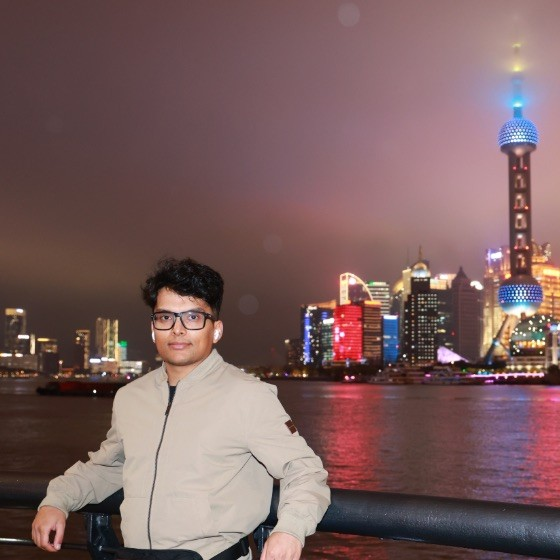

AGENTIC SYSTEMS & DRONES
Ayush Khanal
Co-founder
Udana Systems co-founder and Agentic Software Engineer at Abnormal AI. At Udana, he built cloud infrastructure and AirSim simulations for an autonomous-drone MVP; today, he builds infrastructure and platforms for AI agents. His experience at VMware and Microsoft Bing Maps connects production cloud systems, full-stack product engineering, and mapping.